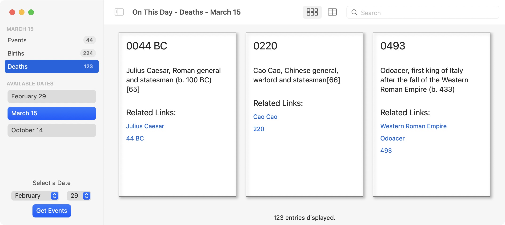

1.设计数据模型¶
在本节中，你将建立一个名为On This Day的SwiftUI应用，从API中提取一天中值得注意的事件，并以各种方式显示。该应用使用了许多macOS应用中出现的界面风格，包括导航侧边栏、详情区、工具栏、菜单和偏好窗口。你最终会得到一个看起来像这样的应用程序：

当开始一个新的应用程序时，非常诱人的是直接跳入界面设计，但这次你要从制定数据模型开始。这有两个原因。首先，在SwiftUI应用程序中，数据驱动显示，所以在你开始布置界面之前，制定数据结构是有意义的。其次，这些数据来自于外部来源，可能没有你想要的结构。现在花点时间来分析和解析将为你以后节省大量的时间和精力。
在本章中，你将使用一个Playground来获取数据，分析其结构并为应用程序创建数据模型。
数据模型设计是任何应用程序开发中至关重要的第一步，所以通过本章的工作将是一次宝贵的经验。但是，如果你已经熟悉了下载数据、解析JSON以及创建数据结构和类，可以随意跳过。在第2章"与Windows一起工作"中，你将下载并导入本节中使用的数据模型文件，并开始构建用户接口。
数据从哪里来？¶
你将使用ZenQuotes.io的API。在你的浏览器中进入today.zenquotes.io，在页面上看一下。在顶部，你会看到某年某月某日发生的有趣事件，你可以向下滚动查看更多：

继续滚动，你会看到"快速入门"，他们会告诉你获得数据的链接格式。也要看看使用限制。在测试时，很容易碰到这个限制，所以你的首要任务之一是下载一个数据样本集来工作。
点击文档链接，获得更多关于API调用返回的JSON结构的信息。在本章的其余部分，你会得到详细的探索。
保存一个样本数据集¶
从起始文件夹中打开playground。这是一个macOS的playground，设置了一些函数来让你开始工作。最重要的一个是getDataForDay(month:day:)，它接收数字月和日，将它们组合成一个URL，然后使用URLSession从该URL下载JSON。
如果返回的数据可以转换为String，你就要把它保存到一个文件中。但是你应该把它保存在哪里呢？与iOS不同，macOS允许你完全访问文件系统。正如你在后面的章节中所了解的，应用程序沙盒可能会限制这一点，但在Playground中，你可以访问一切。由于这是你正在下载的数据，把它保存在Downloads文件夹中是最合理的，所以现在你需要制定Downloads文件夹的文件路径，以便你能使用它。
在文件系统中工作¶
你的第一个想法可能是把文件路径建立为一个字符串。也许~/Downloads会起作用。但请记住，不是每个人都使用英语作为他们的系统语言。我的下载文件夹在/Users/sarah/Downloads，但如果我把系统语言切换到法语，它就在Utilisateurs/sarah/Téléchargements。所以，你不能假设会有一个叫做Downloads的文件夹。FileManager是一个提供文件系统接口的实用类，你将用它来获得这个路径。
Playground的Sources部分包含Files.swift，它拥有保存和读取样本数据的函数。展开Sources部分，如果它还没有展开的话，打开Files.swift。
Note
如果你看不到文件列表，按Command-1打开项目导航器。
第一个函数是sampleFileURL()，它返回一个可选的URL。目前它返回nil，所以用这个替换return nil：
// 1
let fileManager = FileManager.default
do {
// 2
let downloadsFolder = try fileManager.url(
// 3
for: .downloadsDirectory,
// 4
in: .userDomainMask,
// 5
appropriateFor: nil,
create: true)
// 6
let jsonFile = downloadsFolder
.appendingPathComponent("SampleData.json")
return jsonFile
} catch {
// 7
print(error)
return nil
}
这里有不少东西可能对你来说是陌生的：
- 要处理文件和文件夹，你需要使用默认的
FileManager。可能由于其Unix背景，FileManager将文件夹称为目录。 FileManager可以尝试找到标准文件夹的URL。downloadsDirectory是FileManager.SearchPathDirectory枚举中列出的文件夹之一，它为所有常用的文件夹分配了常量，避免了任何转换问题。FileManager.SearchPathDomainMask列出了可能要搜索的域。这里，你想在用户的文件夹中搜索，所以userDomainMask是正确的选择。FileManager在几乎所有的搜索中都忽略了appropriateFor参数，但是create: true告诉它，如果缺少这个文件夹，就建立它。- 如果
FileManager找到了用户的下载文件夹，附加上样本数据文件名以创建最终的URL。 - 如果
FileManager出现了问题，catch将打印错误并返回nil。
保存Files.swift并返回到playground页面。
获取数据¶
由于URLSession使用了await，getDataForDay(month:day:)被标记为async，你必须异步地调用它，所以它的用法被包裹在一个Task中。点击playground最后一行旁边的Play按钮，等待它去API服务器，收集数据并返回。
Note
如果你在水沟中没有看到播放按钮，你的playground被设置为自动运行。长按代码底部的播放按钮，选择Manually Run。
一旦下载完成，你会在控制台看到一条消息，说playground已经把样本数据保存到你的Downloads文件夹：
进入你的Downloads文件夹并打开SampleData.json。在我的电脑上，它在Xcode中打开，但你可能有一个不同的应用程序设置为打开JSON文件：

格式化JSON¶
根据你使用的应用程序，它可能已经将JSON格式化为更可读的形式，但正如你所看到的，Xcode没有，所以这里有一个技巧，使JSON的格式化在任何Mac上变得轻而易举。
选择JSON文件中的所有文本并复制它。打开Terminal并输入以下一行（不要复制和粘贴，否则你会覆盖剪贴板中的JSON）。
pbpaste | json_pp | pbcopy
按Return。
这一连串的三个shell命令将剪贴板的内容粘贴到json_pp命令中，该命令将其打印出来，然后使用pbcopy将格式整齐的JSON复制回剪贴板。macOS将剪贴板称为粘贴板，这就是为什么它使用pbpaste和pbcopy。
回到你原来的SampleData.json文件，删除内容并按Command-V粘贴打印好的JSON，然后再次保存该文件：

如果你犯了一个错误，丢失了样本数据，请再次运行Playground以取回它。
Note
要了解更多关于json_pp的信息，回到你的终端，右击该命令，选择Open man Page，在新窗口中打开内置的帮助页面。你也可以输入man json_pp，但这是在你的工作终端窗口显示信息。使用一个新的窗口可以使你更容易阅读和测试命令。
使用样本数据¶
现在你已经保存了数据并进行了格式化，你可以开始使用它而不是每次都调用API服务器。这样做更快，而且可以避免触及使用限制。
首先，注释掉整个Task部分，但不要删除它，以防你需要在任何时候重新获取数据。接下来，添加这段代码来访问保存的数据：
if let data = readSampleData() {
print(data.count)
}
最后，再次运行该playground，你会看到一个数字显示样本文件中的数据量：

我特意选择2月29日作为样本日，以尽量减少数据量。据推测，2月29日只发生了通常数量的四分之一的有趣事件。］ 你可能会得到一个不同的数字，因为网站增加和删除了一些事件。
探索JSON¶
为了更容易检查返回的JSON数据的结构，打开代码折叠。如果你使用的是Xcode，进入Preferences ▸ Text Editing ▸ Display并勾选Code folding ribbon。现在你就可以在代码折叠色带中点击行号旁边的代码折叠，来折叠和展开数据节点。

通过折叠几乎所有的节点，你可以看到布局的根结构，它包含四个元素。data和date是你在这里需要的。没有办法混淆这两个。 :] 你可以忽略info和updated元素。
在data中，有三个节点分别代表三种不同类型的事件：Births, Deaths和Events。每个节点内的数据都有相同的结构，所以在展开Births以显示第一个节点后，你会看到这样的结构：

三个顶级元素是html、links和text。如果这是在网页中显示，html会很重要，但对于一个应用程序，text更有用。请注意它是如何包括HTML实体的，并且是以年份开始的。
links部分的结构很奇怪，键是字符串中的数字。每个链接有三个元素，"0"是完整的HTML链接，"1"包含URL，"2"包含链接的文本。
解码顶层的内容¶
现在你已经探索了JSON并知道你从API服务器上得到了什么，现在是时候开始解码了。这个JSON的整体数据模型将是一个叫做Day的结构，因为它包含了一个特定日期的信息。它将有data和date属性。date是一个字符串，所以从这个开始。
首先，在playground添加这段代码：
struct Day: Decodable {
let date: String
}
这建立了Day作为一个符合Decodable协议的结构。因为这个数据永远不会被重新编码，所以没有必要符合Codable，它是Decodable & Encodable的类型别名。
要测试这一点，请用这个替换print(data.count)：
do {
let day = try JSONDecoder().decode(Day.self, from: data)
print(day.date)
} catch {
print(error)
}
然后再次运行playground，你会看到控制台中打印出"February_29"。
注意
如果你在运行playground时曾经得到一个错误，说在范围内找不到某些类型，这是因为你正在运行playground中类型声明之前的代码。请使用代码和控制台之间的分隔线上的Execute Playground按钮来代替。你可能需要点击它一次来停止，再点击一次来运行playground。
深入了解¶
解码data元素并不那么简单，因为里面有不同类型的数据。所以现在，是时候考虑低级别的数据模型了。
你可以将"Births"、"Deaths"和"Events"元素中的每个条目解码为一个Event数据模型。Event需要两个属性。text和links - 你可以忽略html。要设置这个，请在playground上添加一个新的结构：
struct Event: Decodable {
let text: String
let links: [String: [String: String]]
}
现在，links是一个丑陋的包含数组的字典，但这足以让它解码。
接下来，在Day中插入新的data属性：
let data: [String: [Event]]
最后，在print(day.date)之后添加第二个调试print：
print(day.data["Births"]?.count ?? 0)
再次运行playground，你会看到日期和一个数字，显示有多少值得注意的出生是在这一天：
拼图的最后一块是链接，所以创建一个名为EventLink的新结构来处理它们：
struct EventLink: Decodable {
let title: String
let url: URL
}
这是每个链接的重要数据，但传入的JSON并不是这样的结构。为了处理进来的数据，Event需要做更多的工作。
处理链接¶
现在，你的Event结构将其链接存储在一个字典中，这可以对它们进行解码，但并不能让应用程序轻松使用这些链接。通过给Event添加一个自定义的init(from:)，你可以将传入的JSON处理成一个更可用的格式。
用这个版本替换Event：
struct Event: Decodable {
let text: String
// 1
let links: [EventLink]
// 2
enum CodingKeys: String, CodingKey {
case text
case links
}
// 3
init(from decoder: Decoder) throws {
// 4
let values = try decoder.container(keyedBy: CodingKeys.self)
// 5
text = try values.decode(String.self, forKey: .text)
// 6
let allLinks = try values.decode(
[String: [String: String]].self,
forKey: .links)
// 7
var processedLinks: [EventLink] = []
for (_, link) in allLinks {
if let title = link["2"],
let address = link["1"],
let url = URL(string: address) {
processedLinks.append(EventLink(title: title, url: url))
}
}
// 8
links = processedLinks
}
}
刚才还那么干净，那么简单，现在看看吧! 那么这一切是在做什么？
links已经变成了一个EventLink对象的数组。- 由于该结构将手动解码
JSON，解码器必须知道使用什么键。 - 该结构现在有一个自定义的
init(from:)用于解码。 - 使用
CodingKeys从解码器的容器中获取指定键的数据值。 - 从
values中解码text元素。在将其分配给text属性之前，这不需要任何进一步的处理。 - 将
links元素解码为一个字典。 - 循环浏览字典中的值，并尝试从每个值中创建一个
EventLink对象。 - 将有效的条目分配给
links。
为了测试这一点，在其他两个语句下添加第三个调试打印语句。它强行解开了Births数组，这在生产中是个坏主意，但在playground所却很好：
print(day.data["Births"]![0].links)
现在运行playground，这一次，它将需要一段时间才能完成。随着Event.init(from:)的循环，你将能看到右边的计数器。做多个循环是playground努力的方向，但这在一个应用里面是非常快的。
链接输出不是很可读，但你可以看到它们都在那里，每个都有一个标题和一个URL：

让day更容易使用¶
现在你正在对JSON进行解码，并建立了基本的数据结构，现在是时候考虑应用程序将如何使用这些数据，以及你可以添加什么来使其更容易。
首先看一下Day，如果有一种更直接的方式来访问各种类别的事件，而不是每次都使用day.data["Births"]这样的选项，那就很方便了。
有三种类型的事件，所以为了避免使用神奇的字符串作为字典的键，首先添加这个枚举来描述它们：
enum EventType: String {
case events = "Events"
case births = "Births"
case deaths = "Deaths"
}
传统上，枚举中的情况以小写字母开始，但原始字符串值被设置为出现在JSON中的标题大小写字符串，所以它们将作为data字典的键来工作。
随着枚举的到位，将这些计算属性添加到Day中。
var events: [Event] { data[EventType.events.rawValue] ?? [] }
var births: [Event] { data[EventType.births.rawValue] ?? [] }
var deaths: [Event] { data[EventType.deaths.rawValue] ?? [] }
这些属性使用原始值来返回一个相关事件的数组或一个空数组。
现在，你可以改变那些不优雅的调试打印语句，使它们不使用选项和强制解包：
print(day.births.count)
print(day.births[0].links)
在Day中，第二个有用的功能是用一种更好的方式来显示日期。现在，在月和日之间有一个下划线。你可以使用自定义的init(from:)来改变解码的方式，但你要使用另一个计算属性。把这个添加到Day：
var displayDate: String {
date.replacingOccurrences(of: "_", with: " ")
}
为了测试这一点，将调试打印语句的第一条改为：
print(day.displayDate)
再次运行playground以看到更新的日期字符串：

除了格式化的日期，这里没有什么不同，但你更容易获得信息。
识别数据对象¶
花点时间思考一下你的应用程序如何显示Day中的信息。displayDate是一个String，可以使用。然后你有一个包含Event和EventLink的数组，你的应用程序中的视图需要以某种方式进行循环。在SwiftUI中循环浏览数据数组时，重要的是每个元素都有一个独特的标识符。这使得SwiftUI引擎能够跟踪哪些元素发生了变化、移动或消失，因此它可以尽可能有效地更新显示。
做到这一点的最好方法是使模型结构符合Identifiable。这个协议要求符合的类型包含一个叫做id的属性，它可以是任何东西，但通常是一个字符串、一个数字或一个唯一的ID。有些数据可能已经有了ID。在这种情况下，没有明显的唯一性，所以你要给每个Event和EventLink添加一个UUID。
从EventLink开始，编辑结构声明以包括Identifiable并添加一个id属性：
struct EventLink: Decodable, Identifiable {
let id: UUID
let title: String
let url: URL
}
这导致在init(from:)创建EventLink对象时出现"Missing argument"的错误。让Xcode应用其建议的修正，用UUID()替换占位符，这样创建每个EventLink的代码就会变成这样：
processedLinks.append(
EventLink(id: UUID(), title: title, url: url))
对于Event，你想做类似的事情。添加Identifiable和一个id属性，但在这种情况下，声明将初始化UUID。替换struct Event: Decodable {改为：
struct Event: Decodable, Identifiable {
let id = UUID()
如果你对EventLink使用了这种技术，你会看到一个关于不可变属性的警告，它不会被解码。这对Event来说不是问题，因为你已经设置了CodingKeys，它告诉解码器哪些属性要使用，哪些要忽略。
整理事件文本¶
现在你已经准备好循环浏览事件和链接了，现在是时候看看事件的文本了。在你的调试打印语句中，将打印出links的那一行替换为这一行，然后再次运行这个playground：
print(day.births[0].text)
在控制台中，你会看到"1468 – Pope Paul III (d. 1549)"或类似的内容。你可以看到文本字符串以年份开始，然后使用HTML实体的"en dash"将其与信息分开。为了显示的目的，把这两部分分开成不同的属性似乎是很有用的。
首先，给Event添加一个year属性。你可能很想把年份转换成Int，但请记住，有些事件发生在很久之前，可能包括"BC"或"BCE"，所以年份需要保持为字符串。
let year: String
将init(from:)中设置text的那一行改为这样：
// 1
let rawText = try values.decode(String.self, forKey: .text)
// 2
let textParts = rawText.components(separatedBy: " – ")
// 3
if textParts.count == 2 {
year = textParts[0]
// 4
text = textParts[1].decoded
} else {
year = "?"
// 4
text = rawText.decoded
}
这里发生了什么事？
- 从
values中解码text元素，就像以前一样，但把它分配给一个常量。 - 用
HTML实体分割rawText，两边加一个空格。 - 如果分割的结果是两部分，把第一部分分配给
年份，第二部分分配给text。如果文本不包含该实体或包含不止一次，则将year设为问号，text设为解码器的完整值。 - 使用
playground开始的String扩展对文本中的任何HTML实体进行解码。
是时候添加另一个调试打印语句了：
print(day.births[0].year)
再次运行playground，你会看到类似这样的东西：
把一切结合起来¶
到目前为止，你已经创建了一系列的数据结构。Day, Event和EventLink。现在，是时候把它们整合到一个ObservableObject中了，它是你应用程序中的主要数据模型。
把这个定义添加到playground上：
// 1
class AppState: ObservableObject {
// 2
@Published var days: [String: Day] = [:]
// 3
func getDataFor(month: Int, day: Int) -> Day? {
let monthName = Calendar.current.monthSymbols[month - 1]
let dateString = "\(monthName) \(day)"
return days[dateString]
}
}
这里有几件重要的事情要看：
- 与其他数据对象不同，这个对象是一个类，它符合
ObservableObject，所以你的SwiftUI视图可以观察它并对任何变化做出反应。 days持有一个Day数据对象的字典，以其日期为索引。这使用了@Published属性包装器，这意味着任何观察这个对象的SwiftUI视图在这个属性发生变化时都会得到通知。- 最后，有一个方便的方法，用于返回所提供的月号和日号的
Day，如果它可用的话。
要测试这一点，请到Playground的顶部，在import行的后面添加这些行：
let appState = AppState()
let monthNum = 2
let dayNum = 29
func testData() {
if let day = appState.getDataFor(
month: monthNum, day: dayNum
) {
print(day.displayDate)
print("\(day.deaths.count) deaths")
} else {
print("No data available for that month & day.")
}
}
这将创建一个AppState对象，设置一个测试月份和日期，然后添加一个测试结果的函数。这些定义需要在顶部，因为Playground是从上到下运行的，在任何东西试图使用它们之前，这些定义必须被设置好。
向下滚动到你读取样本数据文件并打印出一些调试信息的地方。将所有的打印语句替换为以下内容：
appState.days[day.displayDate] = day
testData()
运行playground，你会在控制台看到这样的结果：

用实时数据进行测试¶
作为最后的检查，重新启用实际的下载并确保你的代码能够正确地处理实时数据如何？现在，下载会将数据保存到一个文本文件中，所以你需要改变下载函数，使其将这些数据解码为Day并返回。
首先，找到getDataForDay(month:day:)，将其签名行替换为这个签名行，将其设置为返回Day：
func getDataForDay(month: Int, day: Int) async throws -> Day {
接下来，在你将数据保存到文件的地方，添加这个块，它试图将下载的数据解码成Day，如果不能，则抛出一个错误：
do {
let day = try JSONDecoder().decode(Day.self, from: data)
return day
} catch {
throw FetchError.badJSON
}
最后，注释掉以if let data = readSampleData() {开头的整个代码块，并在其后面添加以下内容：
Task {
do {
let day = try await getDataForDay(
month: monthNum, day: dayNum)
appState.days[day.displayDate] = day
testData()
} catch {
print(error)
}
}
Tips
点击if let data = readSampleData() {左边的代码折叠带，将该块折叠成一行。三次点击折叠后的行来选择整个块，然后按Command-/来注释它。
这与你用来获取样本数据的Task非常相似，但这个版本等待解码后的Day回来，将其添加到appState的days中，并调用测试函数。
如果有下载错误或解码错误，catch块将打印出来。
再次点击Execute Playground按钮。你会看到一条报告保存文件路径的信息，然后你会看到调试报告。

为了好玩，你可以试着改变playground顶部的monthNum和dayNum，然后再运行它，获取一些不同的数据。如果你想看看你得到了什么，可以在testData()中添加更多的打印语句。
关键点¶
- 设计你的数据模型是构建应用程序的一个重要步骤。
Playgrounds使数据设计的迭代比在应用程序中进行迭代要容易得多，因为你必须在每次更改后建立和运行。macOS为你提供了更多对文件系统的访问，你可以使用FileManager来处理这些文件。- 当从外部来源获取数据时，你无法控制其格式，但仍有可能处理数据以适应你的应用程序。
- 计算属性对于使特定的数据容易被访问很有用。
- 如果你正在构建一个
iOS应用程序，你可以通过类似的代码来完成一个类似的过程。这是一个开始开发任何应用程序的可靠方法。
接下来去哪？¶
当你想开始构建一个真正的macOS应用时，这一章可能看起来很辛苦，但在下一章，你会看到这些前期工作意味着应用可以迅速开始成形。
如果你有兴趣了解更多关于async/await网络的信息，请查看这些链接：
- Apple — Meet async/await in Swift
- raywenderlich.com — async/await in SwiftUI
- raywenderlich.com — WWDC 2021: Intro to async/await